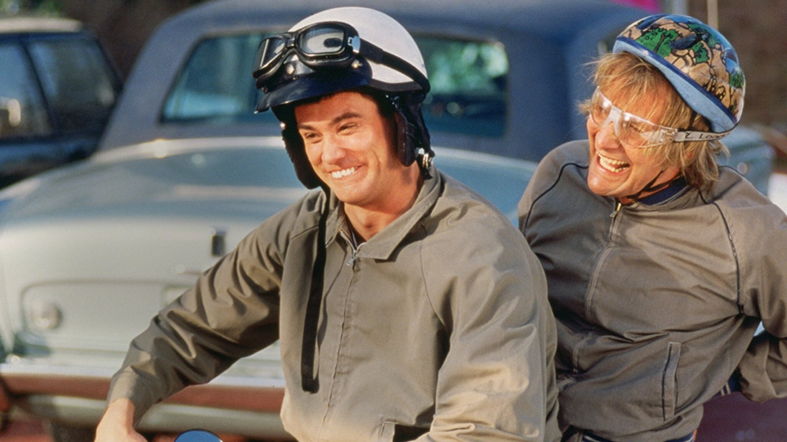
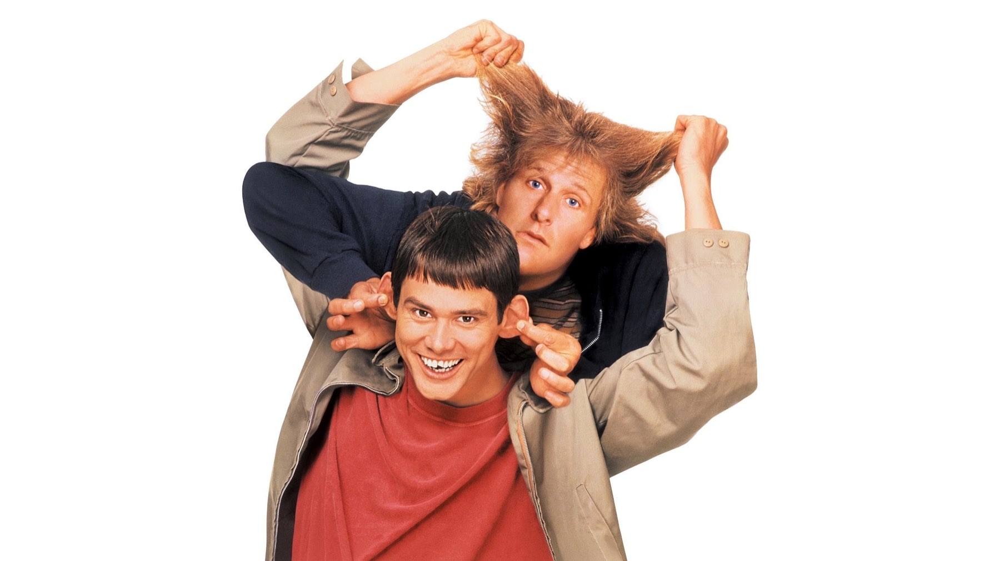
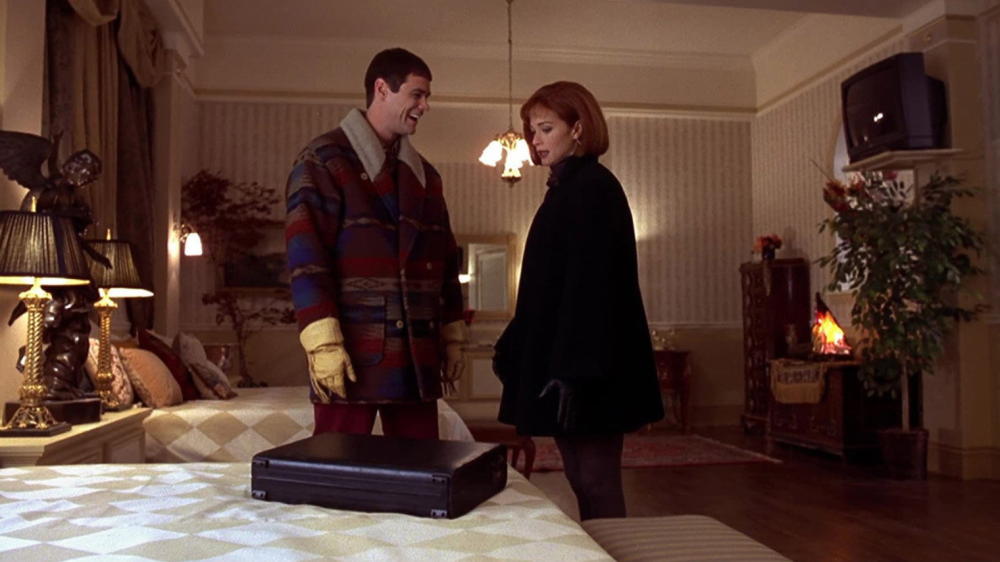

Scemo & più scemo: Carrey 7 milioni, Daniels 50.000 dollari
Un compenso sbilanciato, cento attori che dissero no e un dente scheggiato che era vero
Sette milioni di dollari da una parte, circa cinquantamila dall'altra. Nel cult dei fratelli Farrelly i due protagonisti furono pagati in modo così diverso che la cifra, da sola, racconta metà della storia di Scemo & più scemo.
Sette milioni contro cinquantamila
Jim Carrey arrivò al progetto con il successo di Ace Ventura alle spalle e trattò un compenso di 7 milioni di dollari. Jeff Daniels ne ebbe circa 50.000. Per noi il divario dice molto sulla fiducia dello studio: su una star appena nata si investì senza risparmio, sul secondo nome si volle spendere il minimo. Eppure la commedia funziona proprio perché i due sembrano alla pari, e quella parità non stava nei contratti.

Lo studio voleva un altro Harry
Alla New Line l'idea di Daniels non piaceva. Non aveva mai recitato in vere commedie e i dirigenti dubitavano che potesse reggere il ritmo di un comico come Carrey. I Farrelly e lo stesso Carrey, però, lo volevano, quindi lo studio gli offrì una cifra bassissima nella speranza che rifiutasse. Daniels accettò. Fino ad allora era noto soprattutto come attore drammatico, e quel ruolo diventò uno dei suoi più celebri.
Il paradosso, secondo noi, è tutto qui: la scelta meno gradita ai produttori divenne la metà indimenticabile del titolo. Basta guardare come Daniels subisce le idee di Lloyd con la faccia seria di chi ci crede davvero, e si capisce perché la comicità non reggerebbe senza di lui.
I cento rifiuti
Prima di loro rifiutarono in tanti. Per il ruolo di Lloyd, a quanto si racconta, cento attori declinarono l'offerta, tra cui Steve Martin e Martin Short. Bobby Farrelly spiegò che ne avevano contati cento, senza poter dire quanti fossero davvero. Nicolas Cage fu uno dei nomi in gioco per la coppia, ma lo studio decise di non sceglierlo.
Per noi questo conta più di un aneddoto di casting: senza tutti quei rifiuti non esisterebbe la coppia Carrey e Daniels, e oggi non riusciamo a immaginare altre facce per Lloyd e Harry.
Il dente di Lloyd era davvero suo
Il sorriso con il dente scheggiato è il tratto che riconosciamo subito, e non è un trucco da reparto make-up. Il dente di Carrey era davvero scheggiato: per interpretare Lloyd gli fu semplicemente tolta, per un periodo, la capsula che lo copriva. Per noi questo spiega la forza del personaggio, perché un difetto vero, esibito senza vergogna, fa più ridere di qualsiasi protesi.

Dal Colorado all'Utah
Lloyd e Harry attraversano il Paese, ma buona parte del viaggio fu girata tra Colorado e Utah, mentre le prime riprese partirono in Rhode Island, tra Providence e Cumberland. Lo Stanley Hotel di Estes Park diventa nel film il Danbury Hotel. Per l'aeroporto si usò quello di Salt Lake City, mentre la neve è quella di Copper Mountain, in Colorado. Ne risulta un'America ricostruita con quello che c'era a portata di mano, ma proprio per questo credibile: l'idea di un viaggio senza meta ci guadagna, perché nessuno sa dove stia andando.
Un successo che chiamò un seguito
Negli Stati Uniti la commedia uscì il 16 dicembre 1994, e a novembre 2026 le banche dati del cinema la danno intorno ai 247 milioni di dollari d'incasso nel mondo. Carrey e Lauren Holly vinsero il premio MTV per il miglior bacio, un riconoscimento che dice parecchio sul tipo di film. Vent'anni dopo, il 14 novembre 2014, uscì il seguito: Carrey e Daniels tornarono a recitare fianco a fianco, quindi il pubblico ritrovò la coppia, però con vent'anni in più sulle spalle.
Guardatelo sapendo che il duo più sciocco della commedia nacque da un compenso sbilanciato e da una lunga serie di rifiuti. In Italia si trova su Prime Video e HBO Max, oppure in noleggio su Apple TV e Amazon, al momento della pubblicazione. A voi la domanda: chi regge meglio la scena, il Lloyd che non capisce niente o l'Harry che gli va dietro?
Domande frequenti
Quanto fu pagato Jim Carrey per Scemo & più scemo?
Trattò un compenso di 7 milioni di dollari, dopo il successo di Ace Ventura.
Quanto prese Jeff Daniels?
Circa 50.000 dollari: lo studio non lo voleva e gli offrì una cifra bassa, ma lui accettò.
Il dente di Lloyd era vero?
Sì, era davvero scheggiato: a Carrey fu tolta per un periodo la capsula.
Dove si vede in Italia?
Su Prime Video e HBO Max, oppure in noleggio su Apple TV e Amazon, al momento della pubblicazione.